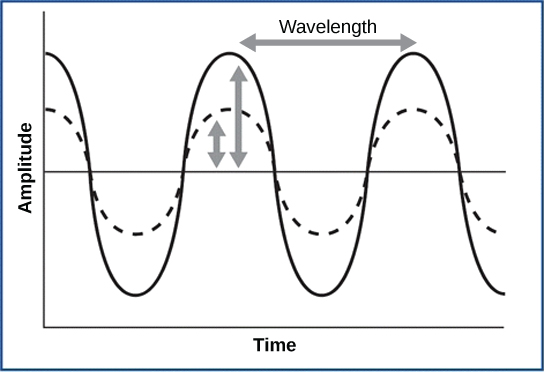
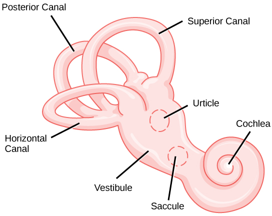

Describe the relationship of amplitude and frequency of a sound wave to attributes of sound
Trace the path of sound through the auditory system to the site of transduction of sound
Identify the structures of the vestibular system that respond to gravity
Audition, or hearing, is important to humans and to other animals for many different interactions. It enables an organism to detect and receive information about danger, such as an approaching predator, and to participate in communal exchanges like those concerning territories or mating. On the other hand, although it is physically linked to the auditory system, the vestibular system is not involved in hearing. Instead, an animal’s vestibular system detects its own movement, both linear and angular acceleration and deceleration, and balance.
Sound
Auditory stimuli are sound waves, which are mechanical, pressure waves that move through a medium, such as air or water. There are no sound waves in a vacuum since there are no air molecules to move in waves. The speed of sound waves differs, based on altitude, temperature, and medium, but at sea level and a temperature of 20º C (68º F), sound waves travel in the air at about 343 meters per second.
As is true for all waves, there are four main characteristics of a sound wave: frequency, wavelength, period, and amplitude. Frequency is the number of waves per unit of time, and in sound is heard as pitch. High-frequency (≥15.000Hz) sounds are higher-pitched (short wavelength) than low-frequency (long wavelengths; ≤100Hz) sounds. Frequency is measured in cycles per second, and for sound, the most commonly used unit is hertz (Hz), or cycles per second. Most humans can perceive sounds with frequencies between 30 and 20,000 Hz. Women are typically better at hearing high frequencies, but everyone’s ability to hear high frequencies decreases with age. Dogs detect up to about 40,000 Hz; cats, 60,000 Hz; bats, 100,000 Hz; and dolphins 150,000 Hz, and American shad (Alosa sapidissima), a fish, can hear 180,000 Hz. Those frequencies above the human range are called ultrasound.
Amplitude, or the dimension of a wave from peak to trough, in sound is heard as volume and is illustrated in [link]. The sound waves of louder sounds have greater amplitude than those of softer sounds. For sound, volume is measured in decibels (dB). The softest sound that a human can hear is the zero point. Humans speak normally at 60 decibels.
For sound waves, wavelength corresponds to pitch. Amplitude of the wave corresponds to volume. The sound wave shown with a dashed line is softer in volume than the sound wave shown with a solid line. (credit: NIH)

Reception of Sound
In mammals, sound waves are collected by the external, cartilaginous part of the ear called the pinna, then travel through the auditory canal and cause vibration of the thin diaphragm called the tympanum or ear drum, the innermost part of the outer ear (illustrated in [link]). Interior to the tympanum is the middle ear. The middle ear holds three small bones called the ossicles, which transfer energy from the moving tympanum to the inner ear. The three ossicles are the malleus (also known as the hammer), the incus (the anvil), and stapes (the stirrup). The aptly named stapes looks very much like a stirrup. The three ossicles are unique to mammals, and each plays a role in hearing. The malleus attaches at three points to the interior surface of the tympanic membrane. The incus attaches the malleus to the stapes. In humans, the stapes is not long enough to reach the tympanum. If we did not have the malleus and the incus, then the vibrations of the tympanum would never reach the inner ear. These bones also function to collect force and amplify sounds. The ear ossicles are homologous to bones in a fish mouth: the bones that support gills in fish are thought to be adapted for use in the vertebrate ear over evolutionary time. Many animals (frogs, reptiles, and birds, for example) use the stapes of the middle ear to transmit vibrations to the middle ear.
Sound travels through the outer ear to the middle ear, which is bounded on its exterior by the tympanic membrane. The middle ear contains three bones called ossicles that transfer the sound wave to the oval window, the exterior boundary of the inner ear. The organ of Corti, which is the organ of sound transduction, lies inside the cochlea. (credit: modification of work by Lars Chittka, Axel Brockmann)
Transduction of Sound
Vibrating objects, such as vocal cords, create sound waves or pressure waves in the air. When these pressure waves reach the ear, the ear transduces this mechanical stimulus (pressure wave) into a nerve impulse (electrical signal) that the brain perceives as sound. The pressure waves strike the tympanum, causing it to vibrate. The mechanical energy from the moving tympanum transmits the vibrations to the three bones of the middle ear. The stapes transmits the vibrations to a thin diaphragm called the oval window, which is the outermost structure of the inner ear. The structures of the inner ear are found in the labyrinth, a bony, hollow structure that is the most interior portion of the ear. Here, the energy from the sound wave is transferred from the stapes through the flexible oval window and to the fluid of the cochlea. The vibrations of the oval window create pressure waves in the fluid (perilymph) inside the cochlea. The cochlea is a whorled structure, like the shell of a snail, and it contains receptors for transduction of the mechanical wave into an electrical signal (as illustrated in [link]). Inside the cochlea, the basilar membrane is a mechanical analyzer that runs the length of the cochlea, curling toward the cochlea’s center.
The mechanical properties of the basilar membrane change along its length, such that it is thicker, tauter, and narrower at the outside of the whorl (where the cochlea is largest), and thinner, floppier, and broader toward the apex, or center, of the whorl (where the cochlea is smallest). Different regions of the basilar membrane vibrate according to the frequency of the sound wave conducted through the fluid in the cochlea. For these reasons, the fluid-filled cochlea detects different wave frequencies (pitches) at different regions of the membrane. When the sound waves in the cochlear fluid contact the basilar membrane, it flexes back and forth in a wave-like fashion. Above the basilar membrane is the tectorial membrane.
Art Connection
In the human ear, sound waves cause the stapes to press against the oval window. Vibrations travel up the fluid-filled interior of the cochlea. The basilar membrane that lines the cochlea gets continuously thinner toward the apex of the cochlea. Different thicknesses of membrane vibrate in response to different frequencies of sound. Sound waves then exit through the round window. In the cross section of the cochlea (top right figure), note that in addition to the upper canal and lower canal, the cochlea also has a middle canal. The organ of Corti (bottom image) is the site of sound transduction. Movement of stereocilia on hair cells results in an action potential that travels along the auditory nerve.
Cochlear implants can restore hearing in people who have a nonfunctional cochlear. The implant consists of a microphone that picks up sound. A speech processor selects sounds in the range of human speech, and a transmitter converts these sounds to electrical impulses, which are then sent to the auditory nerve. Which of the following types of hearing loss would not be restored by a cochlear implant?
Hearing loss resulting from absence or loss of hair cells in the organ of Corti.
Hearing loss resulting from an abnormal auditory nerve.
Hearing loss resulting from fracture of the cochlea.
Hearing loss resulting from damage to bones of the middle ear.
The site of transduction is in the organ of Corti (spiral organ). It is composed of hair cells held in place above the basilar membrane like flowers projecting up from soil, with their exposed short, hair-like stereocilia contacting or embedded in the tectorial membrane above them. The inner hair cells are the primary auditory receptors and exist in a single row, numbering approximately 3,500. The stereocilia from inner hair cells extend into small dimples on the tectorial membrane’s lower surface. The outer hair cells are arranged in three or four rows. They number approximately 12,000, and they function to fine tune incoming sound waves. The longer stereocilia that project from the outer hair cells actually attach to the tectorial membrane. All of the stereocilia are mechanoreceptors, and when bent by vibrations they respond by opening a gated ion channel (refer to [link]). As a result, the hair cell membrane is depolarized, and a signal is transmitted to the chochlear nerve. Intensity (volume) of sound is determined by how many hair cells at a particular location are stimulated.
The hair cells are arranged on the basilar membrane in an orderly way. The basilar membrane vibrates in different regions, according to the frequency of the sound waves impinging on it. Likewise, the hair cells that lay above it are most sensitive to a specific frequency of sound waves. Hair cells can respond to a small range of similar frequencies, but they require stimulation of greater intensity to fire at frequencies outside of their optimal range. The difference in response frequency between adjacent inner hair cells is about 0.2 percent. Compare that to adjacent piano strings, which are about six percent different. Place theory, which is the model for how biologists think pitch detection works in the human ear, states that high frequency sounds selectively vibrate the basilar membrane of the inner ear near the entrance port (the oval window). Lower frequencies travel farther along the membrane before causing appreciable excitation of the membrane. The basic pitch-determining mechanism is based on the location along the membrane where the hair cells are stimulated. The place theory is the first step toward an understanding of pitch perception. Considering the extreme pitch sensitivity of the human ear, it is thought that there must be some auditory “sharpening” mechanism to enhance the pitch resolution.
When sound waves produce fluid waves inside the cochlea, the basilar membrane flexes, bending the stereocilia that attach to the tectorial membrane. Their bending results in action potentials in the hair cells, and auditory information travels along the neural endings of the bipolar neurons of the hair cells (collectively, the auditory nerve) to the brain. When the hairs bend, they release an excitatory neurotransmitter at a synapse with a sensory neuron, which then conducts action potentials to the central nervous system. The cochlear branch of the vestibulocochlear cranial nerve sends information on hearing. The auditory system is very refined, and there is some modulation or “sharpening” built in. The brain can send signals back to the cochlea, resulting in a change of length in the outer hair cells, sharpening or dampening the hair cells’ response to certain frequencies.
Link to Learning
Watch an animation of sound entering the outer ear, moving through the ear structure, stimulating cochlear nerve impulses, and eventually sending signals to the temporal lobe.
Higher Processing
The inner hair cells are most important for conveying auditory information to the brain. About 90 percent of the afferent neurons carry information from inner hair cells, with each hair cell synapsing with 10 or so neurons. Outer hair cells connect to only 10 percent of the afferent neurons, and each afferent neuron innervates many hair cells. The afferent, bipolar neurons that convey auditory information travel from the cochlea to the medulla, through the pons and midbrain in the brainstem, finally reaching the primary auditory cortex in the temporal lobe.
Vestibular Information
The stimuli associated with the vestibular system are linear acceleration (gravity) and angular acceleration and deceleration. Gravity, acceleration, and deceleration are detected by evaluating the inertia on receptive cells in the vestibular system. Gravity is detected through head position. Angular acceleration and deceleration are expressed through turning or tilting of the head.
The vestibular system has some similarities with the auditory system. It utilizes hair cells just like the auditory system, but it excites them in different ways. There are five vestibular receptor organs in the inner ear: the utricle, the saccule, and three semicircular canals. Together, they make up what’s known as the vestibular labyrinth that is shown in [link]. The utricle and saccule respond to acceleration in a straight line, such as gravity. The roughly 30,000 hair cells in the utricle and 16,000 hair cells in the saccule lie below a gelatinous layer, with their stereocilia projecting into the gelatin. Embedded in this gelatin are calcium carbonate crystals—like tiny rocks. When the head is tilted, the crystals continue to be pulled straight down by gravity, but the new angle of the head causes the gelatin to shift, thereby bending the stereocilia. The bending of the stereocilia stimulates the neurons, and they signal to the brain that the head is tilted, allowing the maintenance of balance. It is the vestibular branch of the vestibulocochlear cranial nerve that deals with balance.
The structure of the vestibular labyrinth is shown. (credit: modification of work by NIH)

The fluid-filled semicircular canals are tubular loops set at oblique angles. They are arranged in three spatial planes. The base of each canal has a swelling that contains a cluster of hair cells. The hairs project into a gelatinous cap called the cupula and monitor angular acceleration and deceleration from rotation. They would be stimulated by driving your car around a corner, turning your head, or falling forward. One canal lies horizontally, while the other two lie at about 45 degree angles to the horizontal axis, as illustrated in [link]. When the brain processes input from all three canals together, it can detect angular acceleration or deceleration in three dimensions. When the head turns, the fluid in the canals shifts, thereby bending stereocilia and sending signals to the brain. Upon cessation accelerating or decelerating—or just moving—the movement of the fluid within the canals slows or stops. For example, imagine holding a glass of water. When moving forward, water may splash backwards onto the hand, and when motion has stopped, water may splash forward onto the fingers. While in motion, the water settles in the glass and does not splash. Note that the canals are not sensitive to velocity itself, but to changes in velocity, so moving forward at 60mph with your eyes closed would not give the sensation of movement, but suddenly accelerating or braking would stimulate the receptors.
Higher Processing
Hair cells from the utricle, saccule, and semicircular canals also communicate through bipolar neurons to the cochlear nucleus in the medulla. Cochlear neurons send descending projections to the spinal cord and ascending projections to the pons, thalamus, and cerebellum. Connections to the cerebellum are important for coordinated movements. There are also projections to the temporal cortex, which account for feelings of dizziness; projections to autonomic nervous system areas in the brainstem, which account for motion sickness; and projections to the primary somatosensory cortex, which monitors subjective measurements of the external world and self-movement. People with lesions in the vestibular area of the somatosensory cortex see vertical objects in the world as being tilted. Finally, the vestibular signals project to certain optic muscles to coordinate eye and head movements.
Link to Learning
Click through this interactive tutorial to review the parts of the ear and how they function to process sound.
Section Summary
Audition is important for territory defense, predation, predator defense, and communal exchanges. The vestibular system, which is not auditory, detects linear acceleration and angular acceleration and deceleration. Both the auditory system and vestibular system use hair cells as their receptors.
Auditory stimuli are sound waves. The sound wave energy reaches the outer ear (pinna, canal, tympanum), and vibrations of the tympanum send the energy to the middle ear. The middle ear bones shift and the stapes transfers mechanical energy to the oval window of the fluid-filled inner ear cochlea. Once in the cochlea, the energy causes the basilar membrane to flex, thereby bending the stereocilia on receptor hair cells. This activates the receptors, which send their auditory neural signals to the brain.
The vestibular system has five parts that work together to provide the sense of direction, thus helping to maintain balance. The utricle and saccule measure head orientation: their calcium carbonate crystals shift when the head is tilted, thereby activating hair cells. The semicircular canals work similarly, such that when the head is turned, the fluid in the canals bends stereocilia on hair cells. The vestibular hair cells also send signals to the thalamus and to somatosensory cortex, but also to the cerebellum, the structure above the brainstem that plays a large role in timing and coordination of movement.
Art Connections
[link] Cochlear implants can restore hearing in people who have a nonfunctional cochlear. The implant consists of a microphone that picks up sound. A speech processor selects sounds in the range of human speech, and a transmitter converts these sounds to electrical impulses, which are then sent to the auditory nerve. Which of the following types of hearing loss would not be restored by a cochlear implant?
Hearing loss resulting from absence or loss of hair cells in the organ of Corti.
Hearing loss resulting from an abnormal auditory nerve.
Hearing loss resulting from fracture of the cochlea.
Hearing loss resulting from damage to bones of the middle ear.
In sound, pitch is measured in _____, and volume is measured in _____.
nanometers (nm); decibels (dB)
decibels (dB); nanometers (nm)
decibels (dB); hertz (Hz)
hertz (Hz); decibels (dB)
D
Auditory hair cells are indirectly anchored to the _____.
basilar membrane
oval window
tectorial membrane
ossicles
A
Which of the following are found both in the auditory system and the vestibular system?
basilar membrane
hair cells
semicircular canals
ossicles
B
Free Response
How would a rise in altitude likely affect the speed of a sound transmitted through air? Why?
The sound would slow down, because it is transmitted through the particles (gas) and there are fewer particles (lower density) at higher altitudes.
How might being in a place with less gravity than Earth has (such as Earth’s moon) affect vestibular sensation, and why?
Because vestibular sensation relies on gravity’s effects on tiny crystals in the inner ear, a situation of reduced gravity would likely impair vestibular sensation.
Glossary
audition
sense of hearing
basilar membrane
stiff structure in the cochlea that indirectly anchors auditory receptors
cochlea
whorled structure that contains receptors for transduction of the mechanical wave into an electrical signal
incus
(also, anvil) second of the three bones of the middle ear
inner ear
innermost part of the ear; consists of the cochlea and the vestibular system
labyrinth
bony, hollow structure that is the most internal part of the ear; contains the sites of transduction of auditory and vestibular information
malleus
(also, hammer) first of the three bones of the middle ear
middle ear
part of the hearing apparatus that functions to transfer energy from the tympanum to the oval window of the inner ear
organ of Corti
in the basilar membrane, the site of the transduction of sound, a mechanical wave, to a neural signal
ossicle
one of the three bones of the middle ear
outer ear
part of the ear that consists of the pinna, ear canal, and tympanum and which conducts sound waves into the middle ear
oval window
thin diaphragm between the middle and inner ears that receives sound waves from contact with the stapes bone of the middle ear
pinna
cartilaginous outer ear
semicircular canal
one of three half-circular, fluid-filled tubes in the vestibular labyrinth that monitors angular acceleration and deceleration
stapes
(also, stirrup) third of the three bones of the middle ear
stereocilia
in the auditory system, hair-like projections from hair cells that help detect sound waves
tectorial membrane
cochlear structure that lies above the hair cells and participates in the transduction of sound at the hair cells
tympanum
(also, tympanic membrane or ear drum) thin diaphragm between the outer and middle ears
ultrasound
sound frequencies above the human detectable ceiling of approximately 20,000 Hz
![The illustration shows the parts of the human ear. The visible part of the exterior ear is called the pinna. The ear canal extends inward from the pinna to a circular membrane called the tympanum. On the other side of the tympanum is the Eustachian tube. Inside the Eustachian tube the malleus, which touches the inside of the tympanum, is attached to the incus, which is in turn attached to the horseshoe-shaped stapes. The stapes is attached to the round window, a membrane in the snail shell-shaped cochlea. Another window, called the round window, is located in the wide part of the cochlea. Ring-like semicircular canals extend from the cochlea. The cochlear nerve and vestibular nerve both connect to the cochlea.](Figure_36_04_02.jpg)
![A series of three illustrations are shown. The top illustration shows a cochlea, which is shaped like a snail shell with two parallel chambers, the upper chamber and the lower chamber, coiling from the outside in. These chambers are separated by a flexible membrane basilar membrane. The oval window covers the inner of these parallel chambers. Sound waves enter here, and travel to the middle, or apex, of the coil. The membrane separating the two chambers gets thinner from the outside in, such that is vibrates at different sound frequencies, about 20,000 hertz on the outside and about 200 hertz on the inside. Sound then travels back out through the lower chamber, and exits through the round window. The middle illustration shows a closer view of a cross-sectional image of the cochlea. A roughly circular shape has a roughly circular bone exterior, with the middle portion of the circle divided into four major areas. Two of these are spaces labeled “upper canal” and “lower canal.” In the middle is the organ of Corti, and extending from the middle out through the outer bone area is the cochlear nerve, which extends from the middle as a thin tube and then bulges into a larger oval shape as it extends through the bone. The bottom illustration is an enlarged image of the organ of Corti. In the view shown, the top section is a flattish pink area called the tectorial membrane. Extending beneath that membrane are three areas with hair-like connectors (stereocilia) that run from the membrane to the outer hair cells. The outer hair cells are shaped like rectangles with rounded corners. From the end of each protrudes a narrow tube: the cochlear nerve. These narrow tubes join to an inner hair cell, which looks similar to the outer hair cells but with its rectangular shape remaining a consistent width instead of narrowing into a nerve. At the bottom of the image, opposite the top tectorial membrane, is a basilar membrane.](Figure_36_04_03abcf.png)